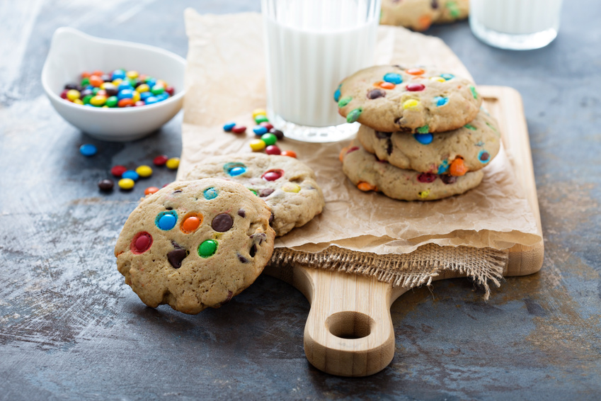

Cookies Americanos
Ingredientes:
- 3 xícaras (chá) de farinha de trigo
- 1 colher (chá) de bicarbonato de sódio
- 200 gramas de manteiga (1 tablete)
- 200 gramas de açúcar branco
- 160 gramas de açúcar mascavo
- ½ colher (chá) de sal
- 2 colheres (chá) de essência de baunilha
- 2 ovos
- 300 gramas de confete de chocolate coloridos
Modo de preparo:
- Em uma tigela, misture a farinha de trigo com o bicarbonato. Reserve.
- Em outra tigela, coloque a manteiga derretida e bata com o auxílio de um fuê até virar um creme.
- Adicione o açúcar branco, o açúcar mascavo, o sal e misture bem.
- Acrescente os ovos, a essência e bata mais um pouco o suficiente para misturar bem.
- Adicione a farinha reservada e mexa bem.
- Coloque o confete de chocolate na massa e misture com as mãos.
- Deixe a massa repousar na geladeira por 30 minutos.
- Retire, modele em bolinhas e vá colocando bem separadas umas das outras, em assadeira grande sem untar.
- Dê uma leve achatada nas bolinhas.
- Leve para assar, por aproximadamente 15 minutos. Veja Dicas de Mãe abaixo.
- Retire do forno, retire da assadeira e deixe que sequem.